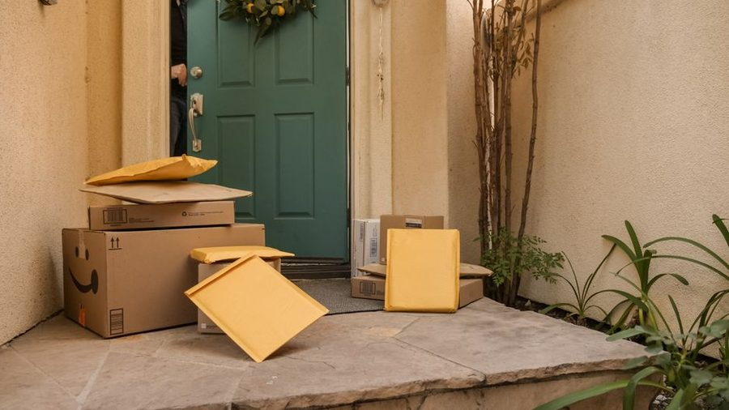

Prazos
Como os prazos de entrega são calculados
Por que a estimativa muda depois da compra, o que são dias úteis e como a distância entre origem e destino pesa no cálculo.
Ler o guia →Portal editorial independente
O RastreioJá reúne explicações claras sobre prazos, códigos de rastreamento, as etapas por que passa um pedido e os direitos de quem compra pela internet. Sem jargão, sem promessa milagrosa — só informação organizada.

Guias em destaque
Selecionamos os temas que mais geram dúvida entre quem acompanha uma entrega. Cada guia é curto, direto e escrito para o consumidor comum.
Prazos
Por que a estimativa muda depois da compra, o que são dias úteis e como a distância entre origem e destino pesa no cálculo.
Ler o guia →
Rastreamento
A anatomia do código, o que cada bloco de letras e números costuma indicar e por que ele demora a aparecer no sistema.
Ler o guia →Logística
Da confirmação do pagamento à entrega na porta: o caminho completo de um pedido e o que cada status quer dizer.
Ler o guia →
Direitos
Quando você pode desistir de uma compra feita pela internet e como o Código de Defesa do Consumidor protege esse direito.
Ler o guia →Atrasos
Um roteiro calmo para entender se o pedido está mesmo parado ou apenas em trânsito entre unidades.
Ler o guia →Entrega
Como um endereço bem preenchido evita devoluções e o que acontece quando ninguém atende na primeira tentativa.
Ler o guia →
Direitos
De quem é a responsabilidade em cada etapa do envio e a quem recorrer quando o pedido não chega.
Ler o guia →
Recebimento
O que conferir antes de assinar o comprovante e como documentar um produto que chegou com dano.
Ler o guia →Segurança
Os sinais que denunciam um aviso fraudulento e o jeito certo de confirmar pelo canal oficial.
Ler o guia →Quem somos
O RastreioJá é um projeto editorial independente. Não realizamos entregas, não vendemos fretes e não temos vínculo com os Correios ou com qualquer transportadora privada. Nosso trabalho é explicar, em linguagem simples, como o processo funciona — para que você acompanhe seus pedidos com mais tranquilidade e reconheça seus direitos.